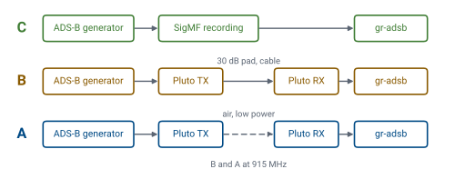
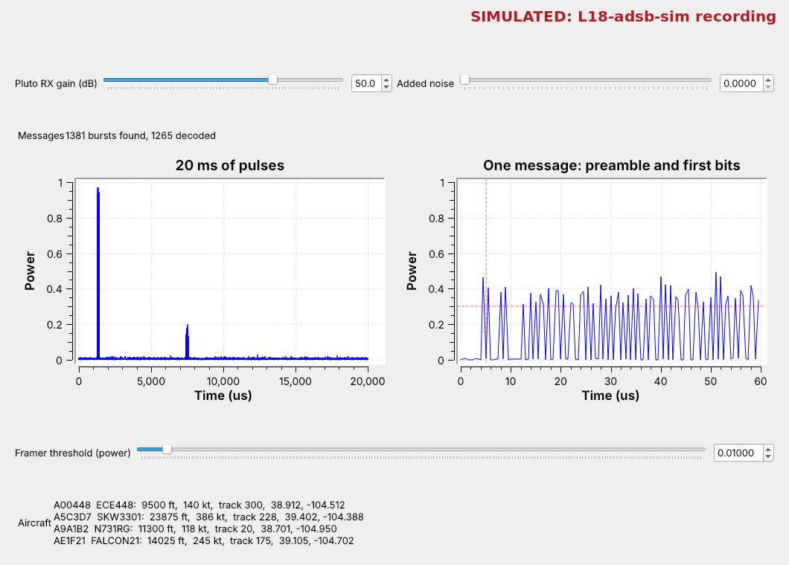

Final Project#
Final Project
A self-defined SDR project: proposal, background research, design, prototype, then a report and live demonstration.
Module 7: Final Project · Dr. Neil Rogers
Learning Objectives
- I can define the scope, objectives, and measurable success criteria for a self-directed SDR project.
- I can research, design, and implement a wireless communication system using an SDR, preferably with GNU Radio.
- I can present my project results in a professional-grade report and live demonstration and defend engineering trade-offs against my own stated success criteria.
Your Project
An individual project that you choose, using your PlutoSDR.
GNU Radio is the recommended tool.
It is 40% of your final grade.
Five milestones build toward a final report and a live demonstration on the last lesson day.
The final project is yours to define, and you do it on your own. You pick a wireless problem, decide what success looks like, and build it with your PlutoSDR. GNU Radio is the course’s tool and the route I recommend, because every lesson has given you flowgraphs to start from. Other SDR software may carry the radio path if it fits your project better; if you choose it, say which and why in your proposal. The project is 40% of your final grade. It ends with a final report and a presentation with a live demonstration on the last lesson day, and at each milestone before that, you write one section of the report.
Five Milestones
Milestone |
Objective |
|---|---|
1. Proposal |
7.2 |
2. Background Research |
7.3 |
3. Design Description |
7.3 |
4. Prototype Update |
7.3 |
5. Final Report and Presentation |
7.4 |
The milestones come in this order, each due on the date the course schedule gives. The proposal sets your scope and success criteria (objective 7.2). In the next three, you research, design, and build the system (7.3). The final report and presentation show what you built and defend it against the criteria you wrote in the proposal (7.4). Each milestone feeds the next, so I return feedback on one before the next is due.
Proposal
What do you want to do, and why is it interesting and reasonable?
A short review of what others have done.
Your end goal, and your A-, B-, and C-level outcomes.
Your next steps.
The proposal answers four questions. First, say what you want to build, and why it is interesting and reasonable to finish in one semester with one Pluto. Second, give a short first look at what others have done, enough to show that the idea is feasible. Third, state your end goal as A-, B-, and C-level outcomes. Fourth, name the first things you will build or read.
Success Levels
Level |
ADS-B generator, for example |
|---|---|
C |
gr-adsb decodes my frames from a SigMF recording. |
B |
It decodes them sent at 915 MHz by cable. |
A |
It decodes them over the air at low power, with positions plotted. |

Your success levels are the criteria that set your final-project grade (see Grading), so write each one as something a demonstration can show is done or not done. The example is an ADS-B generator. Its C level works entirely in a recording, its B level adds the Pluto through a cable, and its A level adds an over-the-air link at low power, which needs my approval (see Transmitting Safely). For the positions, a short Python script can plot the latitude and longitude gr-adsb decodes. “Decodes my frames” is measurable; “works well” is not. Set the C level at something you are sure to finish and the A level at the most you think you can reach.
Background Research
At least four high-quality, relevant papers, blogs, or references.
What each one did, and how it relates to your project.
What you will use from each as a building block.
Your next steps.
Find the prior work your project builds on: papers, GNU Radio wiki pages and out-of-tree modules, PySDR chapters, and well-documented blog projects. For each source, summarize what its authors did, explain how it relates to your project, and name what you will use from it, such as a block, a parameter, a frame format, or a test method. Close with your next steps.
Design Description
What you will build: the subsystems and the blocks in each.
The use cases it serves.
Your unanswered questions and expected sticking points.
How you will test and verify each level.
Your next steps.
The design description turns the proposal into a plan. Draw the system as subsystems, such as source, channel, demodulator, and decoder, and name the GNU Radio blocks, other software, and hardware each one uses. Describe the use cases: who would use the system, and for what. List the questions you cannot answer yet and the places you expect to get stuck, so we can talk about them early. Then say how you will test each success level: the recording, flowgraph display, or measurement that shows it is met.
Prototype Update
Where your design, test, and build stand.
How you are doing against your proposal’s levels.
What changed in the design, and why.
Your next steps.

The prototype update reports what works so far. Show the flowgraphs or code you have built and the results they give, with screenshots or SigMF recordings, and say which success levels you have met. The screenshot is the kind of evidence that settles a level: the Lesson 18 receiver running on a recording, with the count of messages found and decoded and the aircraft it decoded, all in one window. If the design changed, say what changed and why. Close with your plan to finish.
Final Report and Presentation
What you accomplished, and what you did not.
Confirmation that it works: the demonstration and its evidence.
Lessons learned and future work.
An IEEE-quality report and a five-minute presentation with a live demonstration.
The final report brings the four earlier milestones together. Say what you accomplished and what you did not, measured against your own success levels. Confirm the functionality with evidence: the live demonstration, screenshots, and the recordings and flowgraphs that produced them. Close with the lessons you learned and the work you would do next. The report is IEEE quality, typically 7 to 10 pages. The presentation is five minutes and includes the live demonstration.
Defending Your Trade-Offs
Grade yourself against your own A, B, and C levels.
For each design choice, say what you gave up and why.
For any level you missed, show with evidence what limited it.
Objective 7.4 asks you to defend your trade-offs. Every design gives something up: a lower sample rate lets the Pluto stream without dropping samples but narrows the band you see, and a cable makes a link reliable but does not test the over-the-air channel. For each choice, state what you chose, what you gave up, and how the result compares with the level you set. For any level you missed, show with evidence what limited it.
Transmitting Safely
Receive anything in the Pluto’s range: 70 MHz to 6 GHz.
Transmit only at 915 MHz, by cable through a 30 dB attenuator or over the air at low power.
Never transmit on a real service’s frequency.
Your Pluto can receive any real signal in its range, on its own frequency. Any signal your project generates, whatever it imitates, you transmit only at 915 MHz, either into a cable through the 30 dB attenuator, as in the L16 Lab, or over the air at low power where I approve it for your project. Never transmit on the frequency of a real service such as aircraft, ships, satellites, or a commercial broadcast band.
Project Ideas
FPV drone video detector
Reverse engineering a radio device you own
ADS-B generator at 915 MHz
Frequency-hopping link
Doppler radar at 915 MHz
Weather satellite images from Meteor-M
These ideas come from past projects and from what the course has built. Each one is a starting point; your proposal sets its scope. Ideas of your own are welcome.
About the Ideas
FPV drone video detector. Find and identify the analog video a hobby drone sends near 5.8 GHz. Plan to detect and identify it, not to show the picture: the video is wider than the band the Pluto streams. You only receive for this project. I have a starting point for this one; ask me.
Reverse engineering a radio device. Capture a remote, sensor, or other device you own, and decode its protocol as in Lesson 17. You receive the device on its own frequency; a message you regenerate goes out at 915 MHz.
ADS-B generator. Build ADS-B frames in GNU Radio, send them at 915 MHz, and decode them with gr-adsb, as in the success levels above. Never transmit at 1090 MHz.
Frequency-hopping link. Extend the Lesson 16 link at 915 MHz: more channels, faster hops, or a receiver that finds the hop pattern.
Doppler radar. Send a steady tone at 915 MHz at low power and measure the Doppler shift of a person walking or a fan turning. The shift is small: under 10 Hz for a person walking, and tens of hertz for a fan blade. Set the tone about 100 kHz away from the receiver’s center, so the echo lands away from the Pluto’s DC spike (Lesson 5).
Weather satellite images. Receive the Meteor-M N2-4 LRPT signal near 137.9 MHz, demodulate its QPSK as in Lesson 15, and build an antenna for it. Demodulation gives you symbols, not a picture: the image needs a second stage of error-correction decoding (Viterbi and Reed-Solomon), framing, and image decompression. SatDump decodes LRPT and is a good check on your result, but not your project’s decoder. NOAA retired the NOAA-15, -18, and -19 satellites, whose APT signal older guides use, in 2025 (NOAA OSPO, POES status page). Check recent Meteor-M passes on SatNOGS (db.satnogs.org) before you commit.
More ideas. The RTL-SDR Blog (rtl-sdr.com) posts SDR projects every week. Many use an RTL-SDR, so check that the frequency and bandwidth fit your Pluto.
Grading
The level you reach sets your grade. Your proposal defines your A, B, and C levels, and your final report and live demonstration show which level you reached. That level sets your final-project grade; I’ll give the grade for each level in class.
The five milestones are also checkpoints, each assessed on the course’s binary scale (syllabus, Grading): 1 when it meets the objective it serves, and 0 when it does not yet. You may revise a checkpoint after my feedback under course policy, unless I see no evident effort in it.
Milestone |
Objective |
Meets the objective when |
|---|---|---|
Proposal |
7.2 |
the scope is reasonable and every success level can be shown done or not done |
Background Research |
7.3 |
you summarize at least four relevant sources and tie each to a building block |
Design Description |
7.3 |
the subsystems, blocks, use cases, open questions, and test plan are all stated |
Prototype Update |
7.3 |
you show working flowgraphs or code and their results against the levels |
Final Report and Presentation |
7.4 |
the demonstration shows the level you reached, and the report defends the result against your own levels |
The project is individual. Document any outside help as usual (syllabus, Documentation).
What to Turn In
Milestones 1 to 4: each one as a section of your report, submitted on Gradescope by the date on the course schedule.
Final report: the full report on Gradescope, IEEE quality, typically 7 to 10 pages.
Documentation: every milestone and the final report carry a documentation statement (syllabus, Documentation).
Code: your flowgraphs and scripts in a GitHub repository, linked from the report.
Evidence: screenshots and, where the project records or receives signals, the SigMF recordings (
.sigmf-dataand.sigmf-meta) the results come from.Presentation: five minutes on the last lesson day, with a live demonstration on your Pluto.
Getting Started
Pick two or three ideas and check each against your Pluto’s range and bandwidth.
Bring them to Extra Instruction (EI) before the proposal is due.
Keep every flowgraph from the course; most projects start from one.
Start by picking two or three ideas and checking each one against what your Pluto can do: its frequency range, the bandwidth it streams, and the 915 MHz rule for anything you send. Bring the ones you like to Extra Instruction (EI) with me, and we will settle on a scope that fits one semester before the proposal is due. Most projects start from a lesson’s flowgraph, so keep every one you have built.